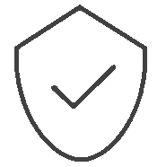

どんなときも。
どこへでも。
カナダ発
100%防水ニットスニーカー

Vessiの特徴

100%防水
雨、雪、ぬかるみ、
もちろん日常も。
どこへでも連れていける
スニーカーです。
ニット生地なのに
100％防水？
信じられないでしょうが、
本当なんです。
私たちのDyma-tex🄬テクノロジー（特許取得済み）により、
雨も雪もぬかるみも泥も
へっちゃらです。
優れた撥水性が汚れ、砂、
水を寄せ付けません。

雲のような
はきごこち
まるで雲の上を歩いているような心地よさ。
靴を脱ぎたくなくなるかも。
Vessiのスニーカーは
ニット素材。
靴ずれの心配はいりません。
100％防水で通気性のあるニットは、
あなたの足を優しくつつみこみます。
クッション性のあるクラウドサポートと抗菌インソールで
足元は一年中快適です。


履いているのを
忘れそうな軽さ
Vessi は世界最軽量の
100％防水シューズです。
私達のラインナップにある
Cityscape スニーカーの重さは
なんとわずか 6.7 オンス
（約１８９グラム）。
あなたの冒険を
より軽快にしてくれます。


地球にも優しい
Vessi では、環境への影響を
最小限に抑えることに
全力で取り組んでいます
長持ちする高品質の製品を作ることで
廃棄物を減らし、
目に見えない部分に至るまで
すべての製品がビーガン素材。
また、Vessi の創業以来、
当社のパッケージは
プラスチックを一切使用せず
100% リサイクル可能な素材で
できたものを使用しています。

製品ラインナップ
Vessiなら、いろんな場所へ行きたくなる。
あなたの目的にぴったりのシューズを見つけてください。
-
アスレチックスタイル
外に出ていろんな活動に参加するのが好きなあなたに。
ランニングやハイキングなど、スポーツライフスタイルを楽しむ
シューズのラインナップはこちら。


-
カジュアルスタイル
普段使いに適したシューズをお探しのあなたに。
カジュアルなシーンで活躍するシューズのラインナップはこちら。

-
オールテレーンスタイル
より特化した機能を求めるあなたに。
寒い季節や、過酷な冒険に適したシューズのラインナップはこちら。

-

80USD以上のお買い上げで送料無料
80USD以上お買い上げの場合、送料はVessiが負担します。（通常配送の場合）
-

サイズ交換無料
90日以内であれば無償でサイズ交換の手続きをさせていただきます。
-

365日保証
365日の防水保証期間を設けています。